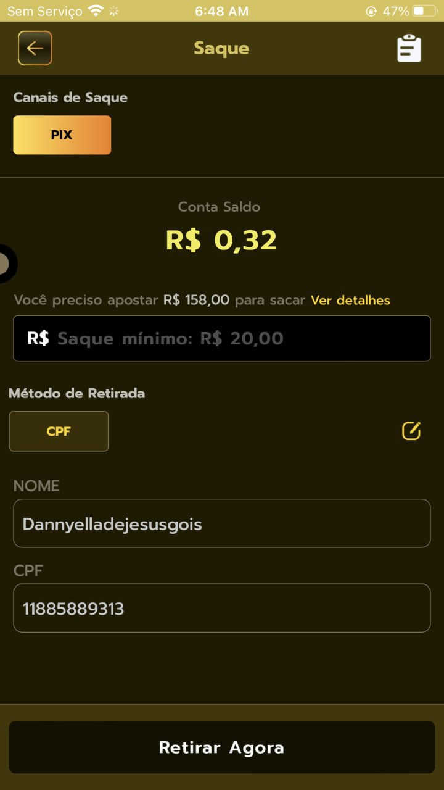
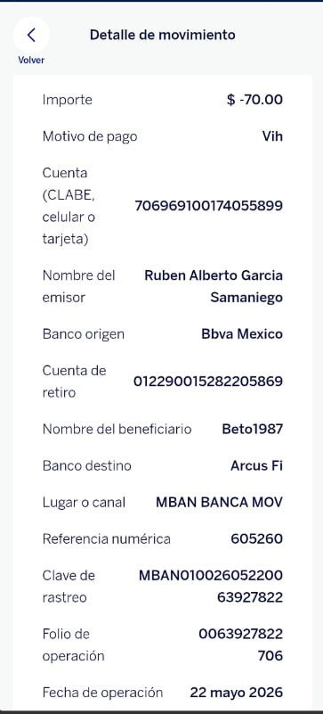
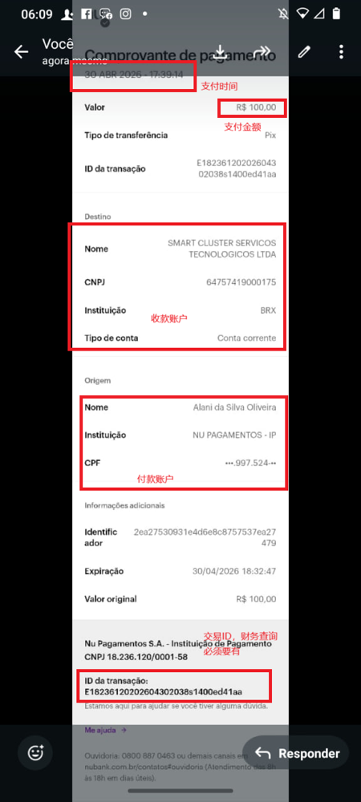
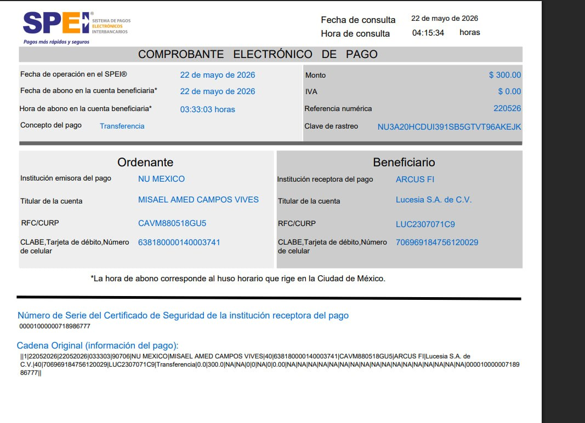
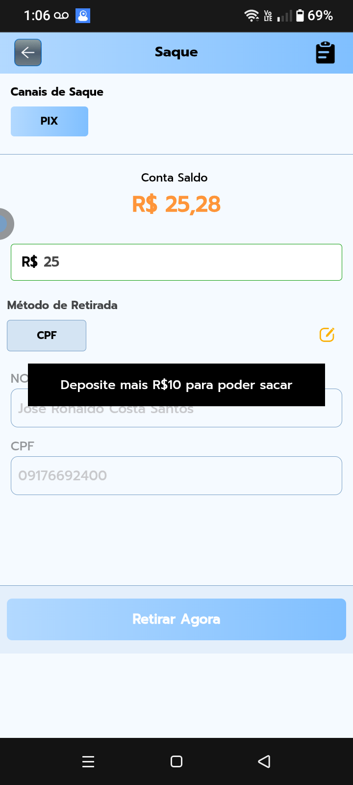
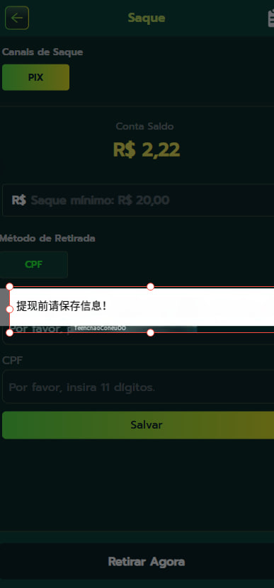
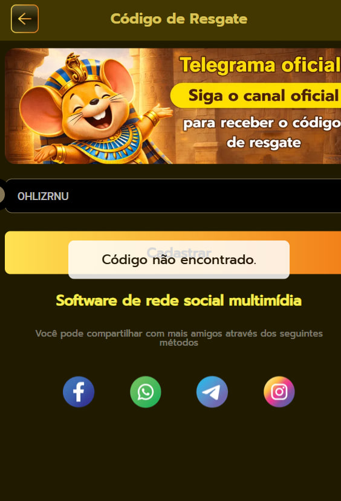
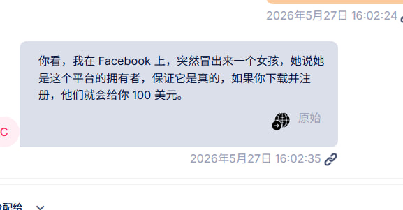

右键图片 → “图片另存为” / “复制图片”，或点击下方按钮
| ID | 类型 | 用例名称 | 前置条件 | 详细步骤 | 期望结果 | 测试截图 | 优先级 |
|---|---|---|---|---|---|---|---|
| TC-1001 | 功能 | 充值未到账意图识别 | 用户经 Salesmartly 插件进线 |
| AI 识别为「充值未到账」，直接调用②充值订单 API（UID 由插件携带，无需向用户索要账户ID）；无订单时才请求充值凭证 | — | P0 |
| TC-1002 | 功能 | 无法提现意图识别 | 用户经插件进线 |
| AI 识别为「无法提现」，请求“提现失败的提示截图”（中葡双语） | — | P0 |
| TC-1003 | 功能 | 提现未到账意图识别 | 用户经插件进线 |
| AI 识别为「提现未到账」（区别于“无法提现”），调用③提现订单 API 按状态分流 | — | P0 |
| TC-1004 | 功能 | CPF 意图识别 | 用户经插件进线 |
| AI 识别为「CPF」，进入 CPF 绑定/修改引导 | — | P0 |
| TC-1005 | 功能 | 账户问题意图识别 | 用户经插件进线 |
| AI 识别为「账户相关问题」，调用①玩家信息 API 查账号状态，引导找回/重置 | — | P0 |
| TC-1006 | 功能 | 游戏异常意图识别 | 用户经插件进线 |
| AI 识别为「游戏异常」，进入 spin/bet/reward 排查，建议清缓存重试 | — | P1 |
| TC-1007 | 功能 | 活动奖励意图识别 | 用户经插件进线 |
| AI 识别为「活动奖励」，请求活动名称/兑换码截图，必要时调用④奖励记录 API | — | P1 |
| TC-1008 | 集成 | ★ UID 由插件自动携带（核心改动） | 用户经 Salesmartly 插件进线，前端已 setLoginInfo 携带 UID+平台 |
| 后台经 Webhook 解析得到 UID + 平台 并完成会话绑定；AI 全程不再向用户索要账户ID，收集环节直接复用 UID。不得再出现“请提供您的账户ID”话术 | — | P0 |
| TC-1009 | 集成 | 插件未携带 UID 的降级兜底 | 插件初始化异常，Webhook 未携带 UID |
| AI 降级请求用户手动提供账户ID并二次确认；不得因缺 UID 直接报错或静默 | — | P0 |
| TC-1010 | 边界 | 意图模糊（短句问候）→ 菜单引导 | 用户经插件进线 |
| AI 发送菜单含选项：① 充值未到账 ② 无法提现 ③ 提现未到账 ④ 账户问题 ⑤ 游戏异常 ⑥ 活动奖励。不能仅回复“请问有什么可以帮您”后无下文 | — | P0 |
| TC-1011 | 边界 | 纯截图输入 → 图片自动分流 | 用户经插件进线 |
| AI 识别为「无法提现-流水不足」，直接告知需完成流水，不再要求文字说明 |  流水不足 | P0 |
| TC-1012 | 边界 | 无效/不匹配截图 → 不臆测 | 用户经插件进线 |
| AI 回复“该截图未提供任何可检索的信息，请重新发送清晰且与本平台相关的截图”。不臆测归类、不转人工 |  无效截图 | P0 |
| TC-1013 | 本地化 | 葡语意图识别 | 用户经插件进线 |
| AI 用葡语回复识别为提现问题，请求 “Pode mandar um print da mensagem de erro?” | — | P0 |
| TC-1014 | 边界 | 同时包含多个意图 | 用户经插件进线 |
| AI 优先处理一个问题，处理完后再处理第二个；或主动询问优先解决哪个 | — | P1 |
| TC-1015 | 功能 | 杂项/其他咨询分类（misc） | 用户经插件进线 |
| AI 走杂项分类：收集 UID+实体 → 查询知识库/TG 群 → 生成回复；无法解答则转人工 | — | P1 |
| ID | 类型 | 用例名称 | 前置条件 | 详细步骤 | 期望结果 | 测试截图 | 优先级 |
|---|---|---|---|---|---|---|---|
| TC-2001 | 集成 | 调用②充值订单 API（UID 自动） | AI 已识别为充值未到账，UID 已绑定 |
| 成功返回订单（recharge_order_id / amount(分) / create_time / status / complete_time），按 status 自动分流，无需用户提供账户ID | — | P0 |
| TC-2002 | 功能 | status=1 回调成功 → 已到账 | ②API 返回最新订单 status=1 |
| AI 回复“已核实本次充值成功到账啦~ 麻烦刷新账户余额确认哦”，附 amount（÷100 转元）与 complete_time | — | P0 |
| TC-2003 | 功能 | status=0 待支付 → 支付未完成 | ②API 返回 status=0 |
| AI 告知“该笔订单仍处于待支付状态，支付尚未完成，请重新发起或更换支付方式” | — | P0 |
| TC-2004 | 功能 | status=2 下单失败 | ②API 返回 status=2 |
| AI 告知下单失败、款项未扣；如已扣款请提供凭证转人工核实 | — | P0 |
| TC-2005 | 功能 | status=3 回调失败 → 核实/转人工 | ②API 返回 status=3 |
| AI 告知“支付成功但回调失败，已为您加急核实”，创建人工工单，附订单号（脱敏） | — | P0 |
| TC-2006 | 功能 | status=4 已过期 | ②API 返回 status=4 |
| AI 告知订单已过期失效，引导重新发起充值 | — | P1 |
| TC-2007 | 集成 | 无订单记录 → 请求充值凭证 | ②API 返回空列表 |
| AI 回复“系统未查询到您的充值订单，请提供充值成功凭证截图（需含 支付时间/金额/收款户/付款户/交易ID）” |  凭证四要素 | P0 |
| TC-2008 | 集成 | 凭证四要素完整校验 | AI 已请求充值凭证 |
| AI 识别四要素完整，结合 UID 创建人工核实工单并附凭证；缺要素则提示补全 | 凭证四要素标注 | P0 |
| TC-2009 | 功能 | 完整电子支付凭证识别（SPEI/PIX） | AI 已请求充值凭证 |
| AI 提取金额、交易ID（Clave de rastreo）、收/付款户，校验与平台收款账户是否一致后核实 |  完整支付凭证 | P1 |
| TC-2010 | 边界 | 截图与问题不匹配（发了登录页/余额页） | AI 已请求充值凭证 |
| AI 回复“您发的截图和本次问题类型不太匹配呢~ 麻烦重新发一张「充值成功凭证」截图哦”。不创建核实工单 | — | P0 |
| TC-2011 | 边界 | 金额单位换算（分 → 元） | ②API 返回 amount=30000（分） |
| AI 展示为 R$300.00（amount÷100），不得直接显示 30000 | — | P1 |
| TC-2012 | 边界 | 多笔订单分页定位 | 用户近期有多笔充值 |
| AI 准确定位用户所述的那笔订单（按时间/金额匹配），分页 pageSize≤100 | — | P1 |
| TC-2013 | 功能 | 重复订单识别（Duplicate Order） | ②API 返回多笔金额相同/时间相近订单 |
| AI 提示“检测到重复充值订单”，避免重复入账，引导核对实际到账笔数 | — | P1 |
| TC-2014 | 功能 | 回调失败(3) 根本原因细分 | ②API 返回 status=3 回调失败 |
| AI 按 网络不稳定 / 金额不符 / 支付网关超时 三类原因分别说明并给出对应处理（重试 / 核对金额 / 稍后再试） | — | P1 |
| TC-2015 | 集成 | 转发三方群(TG BOT) 并学习回复 | 回调失败/已过期或无订单，需三方核实 |
| AI 转发三方群并解析三方 reply（已回调 / 未查到 / 凭证不完整）反馈用户，不丢失 reply 归属 | 转发凭证 | P0 |
| TC-2016 | 边界 | 以银行流水号替代截图核实 | AI 已请求充值凭证 |
| AI 接受银行流水号作为凭证之一并随查询转发；仍建议补充完整截图 | — | P1 |
| TC-2017 | 功能 | 凭证类型：银行流水记录（bank_transfer_record） | AI 已请求充值凭证（2026-06-26 新增凭证类型） |
| AI 识别凭证类型为 bank_transfer_record，提取金额/时间/交易号并随订单核实；区别于 payment_screenshot | 银行流水记录 | P0 |
| TC-2018 | 功能 | 凭证类型：游戏账户交易记录（game_account_transaction_record） | AI 已请求充值凭证（2026-06-26 新增凭证类型） |
| AI 识别凭证类型为 game_account_transaction_record，结合 UID 与订单 API 交叉核对 | — | P0 |
| ID | 类型 | 用例名称 | 前置条件 | 详细步骤 | 期望结果 | 测试截图 | 优先级 |
|---|---|---|---|---|---|---|---|
| TC-3001 | 功能 | 请求提现失败截图 | AI 识别为提现问题，用户未发图 |
| AI 回复“请提供提现失败的提示截图”（中文）+ “Pode mandar um print da mensagem de erro?”（葡语） | — | P0 |
| TC-3002 | 功能 | 截图识别：流水不足 | 用户已发送提现失败截图 |
| AI 识别为「流水不足」，回复“查询到您还需完成 R$158 的流水即可提现”，中葡双语 | 流水不足 | P0 |
| TC-3003 | 功能 | 截图识别：当日未充值 | 用户已发送提现失败截图 |
| AI 识别为「当日未充值」，回复“今日还未充值，充值任意金额并完成 1 倍流水即可提现。充值后不要领取奖励，发起提现后再领取” |  当日未充值 | P0 |
| TC-3004 | 边界 | 截图识别：提现前信息未保存 | 用户发送提现页面截图 |
| AI 引导“请先在提现页填写 CPF/姓名并点击 Salvar 保存，再重新发起提现” |  未保存信息 | P1 |
| TC-3005 | 集成 | ③API 查提现订单 status=0 出款中 | 提现未到账，UID 已绑定 |
| AI 告知“您的提现正在出款处理中，请耐心等待”，附 create_time | — | P0 |
| TC-3006 | 功能 | status=5 待审核 | ③API 返回 status=5 |
| AI 告知“提现申请已提交，正在审核中”，给出预计时效 | — | P0 |
| TC-3007 | 功能 | status=6 审核通过 → 出款中 | ③API 返回 status=6 |
| AI 告知“审核已通过，正在出款，请留意到账”，附 review_time | — | P0 |
| TC-3008 | 功能 | status=1 回调成功（已到账） | ③API 返回 status=1 |
| AI 告知“本次提现已成功到账，请刷新银行/钱包确认”，附 amount(÷100) 与 complete_time | — | P0 |
| TC-3009 | 功能 | status=7 审核退还 → 退回余额 | ③API 返回 status=7 |
| AI 告知“本次提现未通过，金额已退回您的平台余额”，说明常见原因（流水/信息） | — | P0 |
| TC-3010 | 功能 | status=8 审核没收 → 风控转人工 | ③API 返回 status=8 |
| AI 谨慎告知“本次提现因风控/违规被处理，已为您转接人工核实”，创建人工工单。不擅自承诺退款 | — | P0 |
| TC-3011 | 功能 | status=9 人工复审 | ③API 返回 status=9 |
| AI 告知“您的提现正在人工复审，请耐心等待结果” | — | P1 |
| TC-3012 | 功能 | status=2/3/4 失败/待下单 | ③API 返回 status∈{2,3,4} |
| AI 分别说明：2 下单失败可重试；3 回调失败已加急核实并建工单；4 待下单排队中 | — | P1 |
| TC-3013 | 边界 | 流水追问“为什么这么多” → ④奖励记录 API | AI 已告知流水不足 |
| AI 回复“因为您领取了 XX 彩金（如首充 200%），需完成对应倍数流水”，附 activity_name 与 reward_amount | 流水不足 | P0 |
| TC-3014 | 边界 | 提现场景声称已充值 → 切换充值流程 | 提现场景中用户提供充值凭证 |
| AI 判断实际问题为“充值未到账”，自动切换②充值流程并查询订单 | — | P1 |
| TC-3015 | 功能 | 未达最低提现金额 | 用户发起低于最低额的提现 |
| AI 告知“单笔提现最低 R$20，请提高提现金额后再试” | 最低金额 | P1 |
| TC-3016 | 功能 | 提现限额超出 | ③API/截图提示超限 |
| AI 说明限额规则，引导分次提现或次日再试 | — | P1 |
| TC-3017 | 功能 | 需要身份验证（KYC） | 提现触发身份验证 |
| AI 引导完成身份验证（实名/证件/CPF），完成后再提现 | — | P1 |
| TC-3018 | 功能 | PIX 信息无效 → 引导更新 | 提现失败提示 PIX 无效 |
| AI 引导更新 PIX 收款信息（核对 CPF/PIX 键），保存后重新提现 | — | P1 |
| TC-3019 | 集成 | 已发起未到账 → 转风控群 | 提现显示成功但未到账 |
| AI 收集 UID+成功截图，转风控群核实，安抚用户等待 | — | P0 |
| TC-3020 | 功能 | 风控回复分类处理 | 风控群已回复 |
| AI 按 银行风控(安抚) / 平台风控(打标签) / CPF风控(换CPF) / 金额退回(刷新) / 冲正(退回重提) 分别给出对应话术 | — | P0 |
| ID | 类型 | 用例名称 | 前置条件 | 详细步骤 | 期望结果 | 测试截图 | 优先级 |
|---|---|---|---|---|---|---|---|
| TC-4001 | 功能 | CPF 填错请求修改 | AI 识别为 CPF 意图 |
| AI 引导用户进入提现页/个人中心修改 CPF，并提示需与实名一致 | — | P0 |
| TC-4002 | 边界 | 提现页 CPF 未保存 | 用户发送提现页截图 |
| AI 引导“在 CPF 输入框填写 11 位 CPF，点击 Salvar 保存后再提现” | CPF 未保存 | P1 |
| TC-4003 | 功能 | CPF 格式校验（11 位） | 用户提供 CPF |
| AI 提示“CPF 需为 11 位数字”，不通过非法格式 | — | P0 |
| TC-4004 | 边界 | CPF 与实名不符 | 用户欲改 CPF 为他人 |
| AI 告知“CPF 须与账户实名一致，无法绑定他人 CPF”，必要时转人工 | — | P1 |
| TC-4005 | 功能 | CPF 绑定后引导提现 | CPF 已保存成功 |
| AI 引导重新发起提现，并提示满足流水后即可出款 | — | P1 |
| TC-4006 | 边界 | 无法访问提现页 → 转人工 | CPF 自助更新引导中 |
| AI 判定无法自助更新，转人工协助修改 CPF，不让用户卡在自助引导 | — | P1 |
| ID | 类型 | 用例名称 | 前置条件 | 详细步骤 | 期望结果 | 测试截图 | 优先级 |
|---|---|---|---|---|---|---|---|
| TC-5001 | 集成 | 调用①玩家信息 API（UID 自动） | AI 识别为账户问题，UID 已绑定 |
| 返回 uid / register_time / account_status(active|disabled) / level(VIP) / phone_masked，据此分流 | — | P0 |
| TC-5002 | 功能 | 账号或密码错误 | 用户发送登录失败截图 |
| AI 引导“请核对手机号与密码；忘记密码可通过注册手机号重置”，并核对 phone_masked | 账号密码错误 | P0 |
| TC-5003 | 功能 | account_status=disabled 账号受限 | ①API 返回 account_status=disabled |
| AI 谨慎告知“账号当前受限/被禁用”，转人工核实，不泄露具体风控细节 | — | P0 |
| TC-5004 | 功能 | 忘记密码找回 | 用户登录不上 |
| AI 引导通过注册手机号验证码重置密码；手机号不一致则转人工身份核验 | — | P1 |
| TC-5005 | 边界 | 注册手机号核对（脱敏） | ①API 返回 phone_masked |
| AI 仅用脱敏号比对（如 199****1562），不回显完整手机号 | — | P1 |
| TC-5006 | 功能 | VIP 等级 / 注册时间查询 | ①API 返回 level / register_time |
| AI 据 level 与 register_time 准确回复，时间转本地时区展示 | — | P1 |
| TC-5007 | 功能 | 忘记 UID / 账号找回 | 用户忘记账户ID且插件未携带 |
| AI 收集找回信息 → 创建找回工单 → 转人工核验身份后找回 UID | — | P1 |
| TC-5008 | 功能 | 账户受限 → 转风控团队 | 账户问题判定为受限 |
| active→提供指引；disabled/受限→转风控团队核实，不泄露风控细节 | — | P0 |
| TC-5009 | 边界 | ①API 查无账户 → 转人工 | ①API 返回 Account 不存在 |
| AI 核对 UID/平台是否正确；确认无误仍查无则转人工核实 | — | P1 |
| TC-5010 | 集成 | 密码重置 收集验证材料 | account_status=active 走密码重置 |
| 材料齐全后创建密码重置工单并经 TG BOT 转三方重置；材料不全则继续补全 | — | P1 |
| ID | 类型 | 用例名称 | 前置条件 | 详细步骤 | 期望结果 | 测试截图 | 优先级 |
|---|---|---|---|---|---|---|---|
| TC-6001 | 功能 | 平台活动咨询识别 | 用户咨询活动 |
| AI 识别活动类型并说明参与条件；必要时按 activity_name 调用④API | 平台活动 | P0 |
| TC-6002 | 集成 | 调用④奖励记录 API | AI 已识别活动名称，UID 已绑定 |
| 返回 activity_id / activity_name / subcategory / reward_amount / claim_time，据此判断是否已发放 | — | P0 |
| TC-6003 | 功能 | 奖励已发放查询 | ④API 返回含 claim_time 的记录 |
| AI 告知“您的 XX 奖励已于 {claim_time} 发放，金额 R${reward_amount÷100}” | — | P0 |
| TC-6004 | 功能 | 奖励缺失/未到账分析 | ④API 无对应记录或 reward 为空 |
| AI 说明可能未满足领取条件/活动未参与；确属异常则创建人工工单核实 | — | P0 |
| TC-6005 | 功能 | 兑换码无法查询 | 用户发送兑换码截图 |
| AI 引导核对兑换码是否正确/是否过期/是否对应本渠道，必要时按 activity_key 查④API |  兑换码无效 | P0 |
| TC-6006 | 边界 | 站内信召回奖励核实 | 用户收到站内信召回 |
| AI 核对召回 Codigo 与活动，引导在有效期（24h）内领取；过期则说明失效 | 站内信召回 | P0 |
| TC-6007 | 边界 | ★ 诈骗/钓鱼信息识别 | 用户转发可疑召回消息 |
| AI 识别为非官方/疑似诈骗，警示“请勿点击非官方链接或向陌生人转账，官方不会以此方式发放奖励”。不得引导用户按该消息操作 |  疑似诈骗 | P0 |
| TC-6008 | 边界 | 活动条件不符 | 用户领取被拒 |
| AI 对照规则说明不符之处（如未达充值/流水门槛），引导满足条件后再领 | — | P1 |
| TC-6009 | 功能 | 其他活动 → 转人工 | 活动类型无法归类 |
| AI 对其他活动统一转人工处理，避免误答 | — | P1 |
| TC-6010 | 功能 | 资格条件细分指引 | 未满足领取资格 |
| AI 按 活动时间窗 / 充值要求 / 流水要求 / 注册要求 四类分别说明缺口并指引 | 活动资格 | P1 |
| TC-6011 | 功能 | ★ 兑换码子流程（redeem_code）· 有效 | 用户主张奖励缺失（2026-06-26 新增子流程） |
| AI 给出兑换页导航指引并提示“请在过期前兑换”，附 claim 路径 | 兑换码召回 | P0 |
| TC-6012 | 边界 | ★ 兑换码子流程（redeem_code）· 无效 | 用户提供兑换码截图 |
| AI 告知兑换码无效/已过期，核对来源；确认异常则转人工创建工单。不臆造可兑换 | 兑换码无效 | P0 |
| ID | 类型 | 用例名称 | 前置条件 | 详细步骤 | 期望结果 | 测试截图 | 优先级 |
|---|---|---|---|---|---|---|---|
| TC-7001 | 功能 | 游戏打不开/一直转圈 | 用户报游戏异常 |
| AI 建议“清除 APP 缓存、切换网络、重新进入”，仍不行则记录机型并转技术 | 一直加载 | P1 |
| TC-7002 | 功能 | spin 转动无响应 | 用户报转动卡住 |
| AI 引导刷新/重进游戏，确认余额未被扣；异常则记录游戏ID与时间转技术 | — | P1 |
| TC-7003 | 功能 | bet 下注失败/扣款异常 | 用户报下注异常 |
| AI 安抚并记录注单时间/金额，转技术/风控核实，避免重复下注 | — | P1 |
| TC-7004 | 功能 | reward 游戏内奖励未发放 | 用户报中奖未到账 |
| AI 记录局号与时间，核实结算；确属异常转技术处理 | — | P1 |
| TC-7005 | 边界 | 游戏闪退/崩溃 | 用户报闪退 |
| AI 引导更新 APP/重装、检查内存，记录机型与系统版本 | — | P1 |
| ID | 类型 | 用例名称 | 前置条件 | 详细步骤 | 期望结果 | 测试截图 | 优先级 |
|---|---|---|---|---|---|---|---|
| TC-8001 | 功能 | 设备/系统版本兼容检查 | 用户报功能异常 |
| AI 比对支持范围，提示低版本系统升级或更换设备 | — | P1 |
| TC-8002 | 功能 | 网络环境排查 | 用户报加载慢/失败 |
| AI 给出网络排查步骤，定位是否为网络导致 | — | P1 |
| TC-8003 | 边界 | APP 版本过旧 → 引导更新 | 用户使用旧版 APP |
| AI 引导前往官方渠道更新到最新版本 | — | P1 |
| TC-8004 | 边界 | 兼容性指引无效 → 供应商工单 | 已提供清缓存/换设备指引 |
| AI 创建供应商工单并转人工，附 OS/设备型号/浏览器/游戏名 | — | P1 |
| ID | 类型 | 用例名称 | 前置条件 | 详细步骤 | 期望结果 | 测试截图 | 优先级 |
|---|---|---|---|---|---|---|---|
| TC-9001 | 功能 | 页面一直加载/白屏 | 用户报页面打不开 |
| AI 引导“清缓存、切换网络、更换线路/刷新”；多用户同时出现则上报平台故障 | 页面加载失败 | P1 |
| TC-9002 | 功能 | 访问拒绝/地区限制 | 用户报无法访问 |
| AI 说明可能为地区/网络限制，引导更换网络或官方线路 | — | P1 |
| TC-9003 | 边界 | 白屏/黑屏无信息 | 用户发送黑屏截图 |
| AI 回复“该截图未提供可检索信息，请重发清晰截图或描述具体页面”。不随机归类 | — | P1 |
| TC-9004 | 集成 | 基础排查无效 → 技术工单 | 已做刷新/清缓存/切网络 |
| AI 创建技术工单并转人工，附 截图/录屏/UID/平台/设备型号 | 页面故障 | P1 |
| ID | 类型 | 用例名称 | 前置条件 | 详细步骤 | 期望结果 | 测试截图 | 优先级 |
|---|---|---|---|---|---|---|---|
| TC-10001 | 功能 | 已解决 → 正常结束 | AI 已给出解决方案 |
| AI 礼貌结束并可触发满意度评价，标记会话已解决 | — | P0 |
| TC-10002 | 功能 | 未解决 → 重新分类/转人工 | AI 已给出方案 |
| AI 重新识别问题或转人工，不重复同一无效话术 | — | P0 |
| TC-10003 | 边界 | 用户无响应超时 | AI 已询问是否解决 |
| AI 发送结束语并保留会话，超时后自动归档，可再次进线续接 | — | P1 |
| TC-10004 | 边界 | 收尾时提出新问题 → 回到意图识别 | AI 询问是否解决 |
| AI 重新进入意图识别，复用已绑定 UID，无需再次索要账户ID | — | P1 |
| TC-10005 | 集成 | 转人工工单创建 | 需人工介入场景 |
| 工单含 UID/平台/问题类型/已查 API 结果/凭证URL，不丢失上下文 | — | P1 |
| ID | 类型 | 用例名称 | 前置条件 | 详细步骤 | 期望结果 | 测试截图 | 优先级 |
|---|---|---|---|---|---|---|---|
| TC-11001 | 集成 | MD5 签名正确生成 | 已配置 appId(ak_前缀)+secretKey(64hex) |
| 生成的 sign 与服务端一致，请求通过鉴权 | — | P0 |
| TC-11002 | 集成 | timestamp ±5 分钟防重放 | 请求携带 timestamp |
| 服务端拒绝（401）；正常时间窗内通过。缺 timestamp 同样拒绝 | — | P0 |
| TC-11003 | 集成 | 签名错误 → 403 | 构造错误 sign |
| 服务端返回 403 签名验证失败，AI 兜底提示并记录告警 | — | P0 |
| TC-11004 | 集成 | app_id 缺失/无效 → 401 | 构造缺失或非法 app_id |
| 服务端返回 401 未认证，AI 不向用户暴露内部错误，转兜底话术 | — | P0 |
| TC-11005 | 集成 | 金额单位换算（分→元） | API 返回 amount/reward_amount（分） |
| 统一 ÷100 转元展示（R$xx.xx），不直接展示分 | — | P1 |
| TC-11006 | 集成 | 时间 UTC/ISO8601 → 本地 | API 返回 ISO8601 时间 |
| AI 将 UTC/ISO8601 转为用户本地时区（巴西）展示 | — | P1 |
| TC-11007 | 集成 | 分页 pageSize≤100 | 列表接口分页 |
| 服务端按最大 100 处理；AI 正确翻页聚合，不漏单 | — | P1 |
| TC-11008 | 集成 | 敏感字段脱敏 | API 返回订单号/手机号 |
| 对外展示脱敏值（如 199****1562、订单尾号），不回显完整敏感信息 | — | P1 |
| TC-11009 | 边界 | API 超时/500 → 兜底 | 服务端异常 |
| AI 给出“系统繁忙，正在为您加急核实”兜底话术并转人工，不卡死无回复 | — | P1 |
| TC-11010 | 集成 | 业务错误码映射（0/7/404） | API 返回业务码 |
| AI 正确区分：0 正常流程；7/404 转“未查询到/请核对”话术，不误报成功 | — | P1 |
| ID | 类型 | 用例名称 | 前置条件 | 详细步骤 | 期望结果 | 测试截图 | 优先级 |
|---|---|---|---|---|---|---|---|
| TC-12001 | 集成 | ★ AI 输出契约结构完整性 | 工作流引擎对一条咨询产出结果 |
| 返回体含 domain / intent / workflow{status,next_action,requires_human} / failure / risk 全字段；基础上下文 uid/platform_id/product_id 必有。缺字段应告警而非静默 | — | P0 |
| TC-12002 | 集成 | ★ requires_human=true → 强制转人工 | workflow.requires_human=true |
| 必须转人工客服，AI 不得自动闭环回复。忽略该标记直接回复即缺陷 | — | P0 |
| TC-12003 | 集成 | requires_human=false → AI 自动闭环 | workflow.requires_human=false |
| AI 按 next_action 自动生成回复闭环，不必要地转人工应视为偏差 | — | P0 |
| TC-12004 | 集成 | next_action 消费路由 | 引擎返回不同 next_action |
| AI 分别执行：转人工 / 生成回复 / 索取凭证 / 创建工单，动作与字段一致 | — | P0 |
| TC-12005 | 集成 | failure.category 决定话术模板 | workflow 含 failure.category |
| AI 按失败大类选用对应话术模板（风控谨慎 / 支付核实 / 系统兜底 / 信息纠正），不串用 | — | P0 |
| TC-12006 | 功能 | failure.reason 原因码映射 | workflow 含 failure.reason |
| 分别给出：引导更新 CPF / 重新发起 / 重试 / 引导查询账户 / 刷新或重试，原因码与话术一一对应 | — | P0 |
| TC-12007 | 集成 | risk.label 风控处置 | workflow 含 risk.label |
| null 正常放行；其余打风控标记 / 限制操作 / 转风控，不向用户暴露风控细节 | — | P0 |
| TC-12008 | 集成 | snake_case 状态码与历史数字码对齐 | 订单 API 返回状态 |
| AI 以 snake_case 为准解析，且与历史数字码映射一致（见同步增量对照表），新旧并存不串档 | — | P0 |
| TC-12009 | 集成 | identified_by 责任方路由 | failure.identified_by 存在 |
| 工单/转接归属对应责任方，不错派 | — | P1 |
| TC-12010 | 集成 | domain / intent 路由分类 | 引擎返回路由字段 |
| AI 据 domain 进对应业务流，据 intent 选子分支；non_uid_process 走无 UID 流程 | — | P1 |